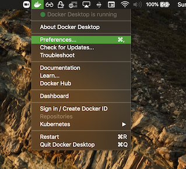

OLIVE Martini Docker Container Setup
Introduction
This page guides through the installation, setup, and launching of a docker-container based OLIVE software package featuring the new "OLIVE Martini" container setup. This new delivery method includes the usual OLIVE server and plugin capabilities delivered in the past, but includes a new addition - Batch GUI capabilities powered by the new Raven GUI that can be accessed through your web browser. For instructions on how to use this new GUI once you have the software properly installed, check out the Raven Web GUI page.
The overall installation process is very similar to previous Docker container based OLIVE deliveries in the past, with the main changes affecting how the OLIVE container is managed for startup, shutdown, etc.
This page assumes you already have Docker installed and configured, or that you are already familiar with it. Some sections are collapsed by default to shift the OLIVE-specific info up, but they can be easily expanded for more details if necessary.
OLIVE Martini Quick Start
This briefly covers the steps necessary to get up and running with an OLIVE Martini to serve as a quick refresher for returning users or those simply wishing to start as quickly as possible. Please refer to the respective linked sections for each step if more information is needed, or if any trouble is encountered.
- Make sure Docker is installed
- Unpack the delivery archive
- Using
$ tar -xzf olive5.6.0-martini-2Jun2022.tar.gz
- Using
- Load the OLIVE Martini image
$ cd olive5.6.0/martini/docker load -i olive-martini-container-5.6.0.tar
- Start the container
$ ./martini.sh startor$ .\martini.ps1 start
- Use the container
- When finished, stop the container
$ ./martini.sh stopor$ .\martini.ps1 stop
GPU Configuration Note
If you wish for OLIVE to use GPUs for supported plugins, you must launch Martini with the --gpu/-gpu flag, and also be sure to configure compatible plugins to use the GPU as outlined in the GPU Plugin/Domain Configuration documentation before launching Martini."
Download, Install, and Launch Docker
If Docker is already installed and running, continue - if not, please expand the section below for setup instructions.
Docker Installation Instructions (Click to expand)
Install and Start Docker
Before you can get started installing and running OLIVE, you'll need to make sure you have fully installed and configured Docker. The proper installation steps vary depending on your host OS, so please refer to the appropriate official Docker installation instructions:
Docker for Ubuntu is especially important to follow the official steps closely, as there are additional important post-installation steps to perform to make sure docker runs smoothly on your system.
Note that if installing into an Ubuntu instance running on WSL2, systemctl is not used on such systems. This means that some of the commands provided in the Docker for Ubuntu instructions above may not succeed as written; notably for starting and stopping the Docker service. Please use service for these commands instead:
$ sudo service docker start
In addition, if using Docker for Ubuntu, the Nvidia drivers must be installed separately. This doesn't seem to be necessary if using Docker Desktop. Instructions for this installation can be found here, from Nvidia.
Before moving on, be sure that the docker service has been started.
Adjust Docker settings (RAM, Cores)
Configure Docker-allocated Resources (Windows and macOS only) (Click to expand)
If you are running Docker on Windows or MacOS, there may be some extra required configuration. By default, Docker is assigned one or two CPU cores, and only 2GB of memory. In order to effectively run the OLIVE docker container, you will need to increase the Memory allocated to Docker to at least 8 GB (or 16 GB for some plugins/tasks), depending on which plugins will be run. If you have cores available, you can obtain greater performance by also increasing the CPU allocation. Allocating more cores and more memory will almost always improve OLIVE performance.


These settings are accessed by right clicking the Docker icon in the notification tray on Windows (notification bar if using MacOS), selecting ‘Settings’ and navigating to the ‘Advanced’ tab, then adjusting the CPU and Memory sliders as desired.


Anatomy of an OLIVE Martini Package
Once Docker is installed and properly configured, you can download and uncompress the OLIVE Docker package from the SRI-provided share link. The link, delivery method, and exact filenames will vary from delivery to delivery, but once you have downloaded and unpacked the software archive:
$ tar -xzf olive5.6.0-martini-2Jun2022.tar.gz
You should find similar content to below unless told otherwise:
olive5.6.0/api/- Directory containing the Python and Java OLIVE Client utilitiesdocs/- OLIVE documentationmartini/olive-martini-container-5.6.0.tar- OLIVE Martini Docker containermartini.sh- Multi-purpose utility and management script for the OLIVE Martini Docker container on linux and macOSmartini.ps1/martini.bat- Same as above, but for Windows PowerShell
OliveGUI/- (Optional) The OLIVE Nightingale Forensic GUIoliveAppData/plugins/- OLIVE Plugins directory; Actual plugins included will depend on the customer, mission, and deliveryworkflows/- (Optional) Directory containing OLIVE workflows; actual included worfklows will depend on the customer, mission, and deliverycerts- (Optional) Directory to contain certificates, keys, passphrases if needed. This is where you will place certificates if using Martini with TLS. See the TLS startup flags below for more details.
Expand the section below for more details on each component, or scroll to continue setup.
OLIVE Martini Component Details (Click to Expand)
api/
This directory contains the Python and Java OLIVE Client utilities that interact with and task a running OLIVE/Martini server. The client documentation covers how to get started with these.
docs/
Contains the documentation you're currently browsing. Other versions can be viewed online at the OLIVE Software Documentation Page, but the version delivered with OLIVE should be the most appropriate for your specific delivery.
To view the documentation, open this page in a web browser:
olive5.6.0/docs/index.html
Or follow the links given by the martini.sh startup output for the live-hosted local documentation.
martini/
Contains the core OLIVE server and utility components for running the OLIVE software. This includes the OLIVE Martini image itself, and the the management scripts to help start, monitor, configure, and stop the container.
olive-martini-container-5.6.0.tar
Docker image that includes OLIVE, the Raven Web GUI, the OLIVE Web Broker, and various other utilities, including an html server to host this documentation.
martini.sh - martini.ps1 / martini.bat
Multi-purpose utility and management script for the OLIVE Martini Docker container on linux and macOS (.sh) or Windows (.ps1 and .bat) respectively.
OliveGUI/
The OLIVE Nightingale Forensic UI for close file analysis, live streaming tasks, and other OLIVE GUI tasks.
oliveAppData/
This is the default location for the all important OLIVE plugins and workflows. Once you start using the system, it is also where the OLIVE server will start saving server logs, in a server/ directory created here.
plugins/
Included plugins are installed here - for more information on OLIVE plugins, refer to the OLIVE Plugin Overview, the list of released plugins, or the individual documentation page of the plugin of interest from the navigation on the left.
workflows/
If any workflows are included with your OLIVE package, they reside here. Workflows are powerful ways to combine different plugins and capabilities to perform multiple scoring requests at once, and/or perform complex routing operations like using Language ID results to choose whether or not to perform ASR, and which language to use if so.
Load the OLIVE Martini Docker Image
The first setup step is to load the OLIVE Martini Docker image. This is only necessary once. Open a command prompt (PowerShell in Windows or Terminal in linux/macOS), navigate to the directory containing the OLIVE Docker image, and follow the examples below.
$ cd /home/<username>/olive5.6.0/martini
$ docker load -i olive-martini-container-5.6.0.tar
$ cd C:\Users\<username>\olive5.6.0\martini
$ docker load -i olive-martini-container-5.6.0.tar
This operation can take some time; quite a few minutes on some machines, and you may not see feedback right away. Once you are returned to the command prompt, if there are no error messages, loading is complete and you can proceed.
Operating Systems Note
There are three provided martini management scripts:
- martini.sh
- martini.bat
- martini.ps1
The functionality of each is intended to be identical, and these are provided as different options for different operating systems for convenience.
The martini.sh script should be used for linux and for macOS. martini.ps1 should be used when managing the OLIVE Martini container from Windows PowerShell, and martini.bat, which calls martini.ps1 internally, should be used if martini.ps1 cannot execute for permission reasons in PowerShell, and when managing OLIVE Martini from Windows Command Prompt (cmd).
The examples below attempt to show all three being used, but in the text, they are refered to as simply martini.sh for brevity. Their features and functionality are the same.
Windows vs macOS/Linux flag format
Note that the one exception is the flag format. The Windows management use only a single '-' for flags, while the linux/macOS script uses two '--'. For example the '--gpu' optional flag for ./martini.sh start --gpu to launch with GPU connections enabled becomes '-gpu' on Windows: .\martini.ps1 start -gpu"
Controlling the Container
Controlling and managing the OLIVE Multi container is made much easier with the provided martini.sh management script. Using this script is as simple as running the script, and providing a command:
$ ./martini.sh <command\>
$ .\martini.bat <command\>
The list of commands available to martini.sh are:
cli- Starts a shell on the container for debugging or operating the OLIVE CLI tools.help- Display the martini.sh help statement (shown below)list- List the running container(s), if any.log- Display a snapshot of the OLIVE Server log in the terminal. Useful for experts for debugging.net- Show the ports on the host that the container is listening on.start- Start the container.stop- Stop the container.status- Show the status of the processes on the container.version- Display the version information for the installed Martini components.
More details for each command, how to use it, and the designed functionality can be found below.
help
Prints out the martini.sh help statement, reminding the user of the available commands:
$ ./martini.sh help
Supported commands include: cli, help, list, log, net, start, stop, status, and version.
martini.sh cli: Starts a shell on the container for debugging.
martini.sh help: Prints out help information.
martini.sh list: List the running container.
martini.sh log: Print out log files from the container.
martini.sh net: Shows the ports on the host that the container is listening on. (requires
`netstat` OS utility be installed for proper function)
martini.sh start: Start the container.
Optional flags:
--gpu: Enable Martini access to GPUs, if available. Be sure to properly configure any
plugin/domains to be used with GPU devices as outlined in the documentation.
--tls_server_only: The server will be configured with a certificate and will only
respond to HTTPS requests; clients aren't required to send certificate but must
use HTTPS protocol (one-way TLS)
--tls_server_and_client: Both the server and clients will need to communicate with
certificates over HTTPS (two-way TLS)
--debug: activate 'debug' mode for the OLIVE server. This will cause OLIVE to maintain
all OLIVE server logs to aid in troubleshooting and debugging.
martini.sh status: Shows status of the processes on the container.
martini.sh stop: Stop the container.
martini.sh version: Prints out version information.
$ .\martini.bat help
Supported commands include: cli, help, list, log, net, start, stop, status, and version.
martini.bat cli: Starts a shell on the container for debugging.
martini.bat help: Prints out help information.
martini.bat list: List the running container.
martini.bat log: Print out log files from the container.
martini.bat net: Shows the ports on the host that the container is listening on. (requires
`netstat` OS utility be installed for proper function)
martini.bat start: Start the container.
Optional flags:
-gpu: Enable Martini access to GPUs, if available. Be sure to properly configure any
plugin/domains to be used with GPU devices as outlined in the documentation.
-tls_server_only: The server will be configured with a certificate and will only
respond to HTTPS requests; clients aren't required to send certificate but must
use HTTPS protocol (one-way TLS)
-tls_server_and_client: Both the server and clients will need to communicate with
certificates over HTTPS (two-way TLS)
-debug: activate 'debug' mode for the OLIVE server. This will cause OLIVE to maintain
all OLIVE server logs to aid in troubleshooting and debugging.
martini.bat status: Shows status of the processes on the container.
martini.bat stop: Stop the container.
martini.bat version: Prints out version information.
start
Starts up a previously built and loaded container. Note that it can take several seconds for all the servers to start on the container.
Usage:
$ ./martini.sh start
$ .\martini.bat start
Optional Flags
Introduced with OLIVE 5.5.1, the start command now accepts four different optional startup flags.
GPU Access
This grants the OLIVE Martini access to GPUs, if available. Usage:
$ ./martini.sh start --gpu
$ .\martini.bat start -gpu
GPU Availability
Note that if no GPUs are available on the machine, or the GPUs are not compatible with the OLIVE 5.6.0 software and this flag is used, startup of the Martini will fail!"
Plugin GPU Configuration
This flag allows the Martini container to access GPUs that may be available on the system, but does not reconfigure any plugins to use these GPUs. Please be sure to properly configure any plugin/domains to be used with GPU devices as outlined in the GPU Plugin/Domain Configuration documentation. Without explicit configuration to use a GPU, whether by SRI before delivery or by the end user, no plugin will take advantage of available GPUs.
TLS Encryption (Server-side Only)
Configures the server to use one-way TLS, relying on a server-side for encrypted communication. The server will only respond to HTTPS requests. Clients aren't required to send a certificate, but must use HTTPS protocol. Usage:
$ ./martini.sh start --tls_server_only
$ .\martini.bat start -tls_server_only
Requires additional files for proper function, and for Martini to start at all if this option is enabled. All of these files must be placed in olive5.6.0/oliveAppData/certs/. The files are:
- passwords.txt
- A file with passphrases for secret keys where each passphrase is specified on a separate line. Passphrases are tried in turn when loading the key. The file can be empty if passphrases are not required.
- server.crt
- A certificate in the PEM format. If intermediate certificates should be specified in addition to a primary certificate, they should be specified in the same file in the following order: the primary certificate comes first, then the intermediate certificates.
- NOTE: You need to rename a copy of your certificate and put it in the /certs/ directory mentioned above.
- server.key
- The secret key in the PEM format for the server.crt.
- NOTE: You need to rename a copy of your certificate key and put it in the /certs/ directory.
Please work with your IT department to obtain valid certificates.
HTTP / HTTPS Note:
Note that if using TLS, the access points for the Raven UI and locally hosted documentation must use HTTPS instead of HTTP. For example, to access the Raven UI without TLS, the user can navigate to:
http://localhost:5580
But when using TLS, access must be through HTTPS:
https://localhost:5580
The links printed by the Martini startup should reflect this setting.
TLS Encryption (Server-side and Client-side)
Similar to the --tls_server_only flag described above, but instead activates two-way TLS. Both the server and client are required to provide a certificate, and all communication occurs over HTTPS. Usage:
$ ./martini.sh start --tls_server_and_client
$ .\martini.bat start -tls_server_and_client
Carries the same file and certificate requirements as --tls_server_only, but with the addition of the client providing their own valid certificate. The additional file requirement for two way TLS:
- clientCA.crt
- A file with trusted CA certificates in the PEM format used to verify client certificates.
- NOTE: You need to rename a copy of your file and put it in the /certs/ directory mentioned above.
As always, please work with your IT department to obtain valid certificates.
HTTP / HTTPS Note:
Note that if using TLS, the access points for the Raven UI and locally hosted documentation must use HTTPS instead of HTTP. For example, to access the Raven UI without TLS, the user can navigate to:
http://localhost:5580
But when using TLS, access must be through HTTPS:
https://localhost:5580
The links printed by the Martini startup should reflect this setting.
Server Debug Mode
Activates 'debug' mode for the OLIVE server. This causes OLIVE to mantain all OLIVE server logs to aid in troubleshooting and debugging. These logs are stored in olive5.6.0/oliveAppData/server/ by default. Without this flag, "failed" logs are retained, but logs for jobs deemed to be successful are deleted as tasks are completed to avoid clutter and confusion. Usage:
$ ./martini.sh start --debug
$ .\martini.bat start -debug
stop
Stops a running container.
$ ./martini.sh stop
$ .\martini.bat stop
status
martini.sh status
Prints out some information on the processes running, network ports, workflows and plugins which are active on the container.
$ ./martini.sh status
Message brokers running:
Processes: 1
Plugins: aed-enrollable-v1.0.1 aln-waveformAlignment-v1.0.0 env-indoorOutdoor-v1.0.0 env-multiClass-v2.0.0 env-powerSupplyHum-v1.0.0 env-speakerCount-v1.0.0 lid-embedplda-v2.0.1 nsd-sadInverter-v1.0.0 sad-dnn-v7.0.1 sed-rmsEnergy-v1.0.0 sid-dplda-v2.0.1 voi-speakingStyle-v1.0.0 voi-vocalEffort-v1.0.1 vtd-dnn-v7.0.1
Workflows: Acoustic-Event-Detection.workflow Background-Noise-Detection.workflow SAD_SID_LID.workflow Speech-Analysis.workflow
tcp 0 0 0.0.0.0:5589 0.0.0.0:* LISTEN 0 7905040 72/python
tcp 0 0 0.0.0.0:5590 0.0.0.0:* LISTEN 0 7915534 73/python
tcp 0 0 0.0.0.0:8070 0.0.0.0:* LISTEN 0 7910329 9/python
tcp 0 0 0.0.0.0:5004 0.0.0.0:* LISTEN 0 7917573 138/nginx: master p
tcp 0 0 0.0.0.0:5005 0.0.0.0:* LISTEN 0 7914186 15/java
tcp 0 0 0.0.0.0:8080 0.0.0.0:* LISTEN 0 7917572 138/nginx: master p
tcp 0 0 0.0.0.0:80 0.0.0.0:* LISTEN 0 7897930 26/httpd
tcp 0 0 0.0.0.0:5588 0.0.0.0:* LISTEN 0 7915524 16/python
unix 2 [ ACC ] STREAM LISTENING 7915525 16/python /tmp/executor_714acd0b-0d0d-4259-84c2-127b84b8d26c.pipe
unix 2 [ ACC ] STREAM LISTENING 7905043 80/python /tmp/pymp-vu6okza8/listener-4e5_70ll
Httpd (web-ui) servers running: 6
Nginx (reverse proxy) server running: 2
Olive servers running: 12
Active Internet connections (only servers)
Proto Recv-Q Send-Q Local Address Foreign Address State
tcp 0 0 0.0.0.0:5589 0.0.0.0:* LISTEN
tcp 0 0 0.0.0.0:5590 0.0.0.0:* LISTEN
tcp 0 0 0.0.0.0:8070 0.0.0.0:* LISTEN
tcp 0 0 0.0.0.0:5004 0.0.0.0:* LISTEN
tcp 0 0 0.0.0.0:5005 0.0.0.0:* LISTEN
tcp 0 0 0.0.0.0:8080 0.0.0.0:* LISTEN
tcp 0 0 0.0.0.0:80 0.0.0.0:* LISTEN
tcp 0 0 0.0.0.0:5588 0.0.0.0:* LISTEN
$ .\martini.bat start -tls_server_only
Message brokers running:
Processes: 1
Plugins: aed-enrollable-v1.0.1 aln-waveformAlignment-v1.0.0 env-indoorOutdoor-v1.0.0 env-multiClass-v2.0.0 env-powerSupplyHum-v1.0.0 env-speakerCount-v1.0.0 lid-embedplda-v2.0.1 nsd-sadInverter-v1.0.0 sad-dnn-v7.0.1 sed-rmsEnergy-v1.0.0 sid-dplda-v2.0.1 voi-speakingStyle-v1.0.0 voi-vocalEffort-v1.0.1 vtd-dnn-v7.0.1
Workflows: Acoustic-Event-Detection.workflow Background-Noise-Detection.workflow SAD_SID_LID.workflow Speech-Analysis.workflow
tcp 0 0 0.0.0.0:5589 0.0.0.0:* LISTEN 0 7905040 72/python
tcp 0 0 0.0.0.0:5590 0.0.0.0:* LISTEN 0 7915534 73/python
tcp 0 0 0.0.0.0:8070 0.0.0.0:* LISTEN 0 7910329 9/python
tcp 0 0 0.0.0.0:5004 0.0.0.0:* LISTEN 0 7917573 138/nginx: master p
tcp 0 0 0.0.0.0:5005 0.0.0.0:* LISTEN 0 7914186 15/java
tcp 0 0 0.0.0.0:8080 0.0.0.0:* LISTEN 0 7917572 138/nginx: master p
tcp 0 0 0.0.0.0:80 0.0.0.0:* LISTEN 0 7897930 26/httpd
tcp 0 0 0.0.0.0:5588 0.0.0.0:* LISTEN 0 7915524 16/python
unix 2 [ ACC ] STREAM LISTENING 7915525 16/python /tmp/executor_714acd0b-0d0d-4259-84c2-127b84b8d26c.pipe
unix 2 [ ACC ] STREAM LISTENING 7905043 80/python /tmp/pymp-vu6okza8/listener-4e5_70ll
Httpd (web-ui) servers running: 6
Nginx (reverse proxy) server running: 2
Olive servers running: 12
Active Internet connections (only servers)
Proto Recv-Q Send-Q Local Address Foreign Address State
tcp 0 0 0.0.0.0:5589 0.0.0.0:* LISTEN
tcp 0 0 0.0.0.0:5590 0.0.0.0:* LISTEN
tcp 0 0 0.0.0.0:8070 0.0.0.0:* LISTEN
tcp 0 0 0.0.0.0:5004 0.0.0.0:* LISTEN
tcp 0 0 0.0.0.0:5005 0.0.0.0:* LISTEN
tcp 0 0 0.0.0.0:8080 0.0.0.0:* LISTEN
tcp 0 0 0.0.0.0:80 0.0.0.0:* LISTEN
tcp 0 0 0.0.0.0:5588 0.0.0.0:* LISTEN
cli
Starts up a shell within the OLIVE Martini container. The container must already be running. This is typically used for internal testing and troubleshooting and is not meant to be used by end-users. You can use this shell to run Olive CLI commands, such as:
$ ./martini.sh cli
# Show the plugins installed on the container:
$ ls /home/olive/olive/plugins/
# Show the audio files on the container, which you can use as examples:
$ ls /olive-data/media/shared/
# Run an analysis
$ localanalyze /home/olive/olive/plugins/lid-embedplda-v2.0.1/domains/multi-v1 /olive-data/media/shared/Komodo_dragon_en.wav.lst
# See the results
$ more output.txt
$ .\martini.bat cli
# Show the plugins installed on the container:
$ ls /home/olive/olive/plugins/
# Show the audio files on the container, which you can use as examples:
$ ls /olive-data/media/shared/
# Run an analysis
$ localanalyze /home/olive/olive/plugins/lid-embedplda-v2.0.1/domains/multi-v1 /olive-data/media/shared/Komodo_dragon_en.wav.lst
# See the results
$ more output.txt
This can also be used for troubleshooting by advanced users.
Advanced Martini Troubleshooting using martini.sh cli
When running with the cli command, your shell starts in /opt/olive. This is where the runtime is installed, and where things are run within the container.
In /opt/olive:
- Running martini.sh status will print out what is running, and what network connections are active. And looking at this script will tell you what should be running.
- Do not run martini-process.sh. That is run when the container starts.
The /home/olive/olive directory is the other important directory. Here:
- The
martini-process.logfile is the output of the script which starts all servers. - The
env.logfile (if it exists) are the shell variables set. - The other log files here were started by each server.
- The
plugins/directory contains all plugins. - The
server/directory contains server logs.
net
Lists the project network ports that are active on the host machine, the machine running the container.
$ ./martini.sh net
$ .\martini.bat net
list
Lists the project containers that are running.
$ ./martini.sh list
$ .\martini.bat list
log
martini.sh log
Displays the OLIVE Server log; useful for checking on the status of the OLIVE server in case of a malfunction, or troubleshooting unexpected behavior.
$ ./martini.sh log
$ .\martini.bat log
This can be saved out to a local file by providing a filename after the log command:
$ ./martini.sh log <logfile>
$ .\martini.bat log <logfile>
And the shell can be attached to this log file and updated in real time with the -f flag after a local logfile name:
$ ./martini.sh log <logfile> -f
$ .\martini.bat log <logfile> -f
version
Diplays the version information for the individual components of OLIVE:
$ ./martini.sh version
Martini v1.1. Olive v5.3.0. Broker v1.5. Raven v0.2.0.
$ .\martini.bat version
Martini v1.1. Olive v5.3.0. Broker v1.5. Raven v0.2.0.
Using The Container
Once you have started up the container using the martini.sh start command described above, you are ready to begin using it. Your container has four different applications within it, which you can use - the Raven Web UI, the OLIVE Server itself, the OLIVE Message Broker, and a web server hosting the OLIVE Documentation. In addition, most OLIVE deliveries typically ship with the interactive Nightingale Forensic GUI for performing close file analysis using OLIVE plugins and workflows, as well as both Java and Python OLIVE Client CLI example applications.
Note that if you are attempting to connect from the same machine, you can access this feature at localhost:5580. If you are accessing from a different machine, you must use the full hostname, or IP address. For convenience, the martini.sh script outputs the hostname and corresponding port for several activities:
$ martini.sh start
\Started the container.
From this machine:
Run Nightingale (Olive GUI) using server localhost and port 5588.
Use a web browser to localhost:5570 to see the documentation.
Use a web browser to localhost:5580 to use the Raven Web UI.
If using the REST API point to the server running on localhost:5004.
From any other machine:
Run Nightingale (Olive GUI) using server stauf-MBP16 and port 5588.
Use a web browser to stauf-MBP16:5570 to see the documentation.
Use a web browser to stauf-MBP16:5580 to use the Raven Web UI.
If using the REST API point to the server running on stauf-MBP16:5004.
Installed plugins (mounted from /Users/astauf/olive/olive5.3.0/oliveAppData/plugins) are:
asr-dynapy-v3.0.0 map-routerGlobal-v1.0.0
dfa-cplda-v1.0.0 map-routerGlobal-v1.0.1
dfa-speakerSpecific-v1.0.0 map-routerRegion-v1.0.0
dfa-spoofnet-v1.0.0 pim-validateGlobal-v1.0.0
enh-mmse-v2.0.2 qbe-ftdnnSmolive-v1.0.0
env-audioQuality-v2.0.0 qua-analysis-v1.0.0
fdi-pyEmbed-v1.0.0 qua-filter-v1.0.0
fdv-pyEmbed-v1.0.0 red-transform-v1.0.0
fri-pyEmbed-v1.0.0 sad-dnn-v7.0.2
frv-pyEmbed-v1.0.0 sad-dnnSmolive-v1.0.0
gdd-embedplda-v1.0.0 sdd-diarizeembed-v1.0.0
gid-gb-v2.0.1 sdd-sbcEmbed-v2.0.3
ldd-embedplda-v1.0.0 shl-sbcEmbed-v1.0.2
ldd-embedplda-v1.0.1 sid-dplda-v2.0.2
lid-embedplda-v3.0.0 sid-embed-v6.0.2
lid-embedplda-v3.0.1 tpd-dynapy-v5.0.0
lid-embedpldaSmolive-v1.0.0 vtd-dnn-v7.0.2
Installed workflows (mounted from /Users/astauf/olive/olive5.3.0/oliveAppData/workflows) are:
/opt/olive-broker/data/workflows/FaceDetection_Image_FDI.workflow.json
/opt/olive-broker/data/workflows/FaceDetection_Video_FDV.workflow.json
/opt/olive-broker/data/workflows/FaceRecognition_Image_FRI.workflow.json
/opt/olive-broker/data/workflows/FaceRecognition_Video_FRV.workflow.json
/opt/olive-broker/data/workflows/SID_quality-controlled.workflow.json
/opt/olive-broker/data/workflows/SmartTranscriptionFull.workflow.json
/opt/olive-broker/data/workflows/TPD-eng.workflow.json
/opt/olive-broker/data/workflows/conditional_asr_v2.workflow.json
/opt/olive-broker/data/workflows/quality-region-analysis-for-SID.workflow.json
Please choose the appropriate hostname and port number for your desired activity and host situation.
Raven Web UI
To connect to the Raven Web/Batch GUI, open a web browser and navigate to URL host:5580. Once there, follow the on-screen prompts to drag-and-drop one or more audio files to the "local media" dropbox section, select one of the available workflows, and click on the action button in the lower right hand corner. More details for the Raven GUI can be found on its dedicated documentation page: Raven Web UI.
The OLIVE Documentation
When the container is started, it launches a web server serving this documentation. To view the hosted version, navigate a web browser to URL host:5570.
The OLIVE Server
This is used internally by the Olive Web UI and the Olive Message Broker. You can also write Python programs which make calls directly to the server. See seperate documentation on olivepy API for details.
The OLIVE Message Broker
This is used internally by the Olive Web UI.
Nightingale Forensic UI
This GUI provides access to the full suite of available OLIVE plugins and workflows, for performing close file analysis. It offers powerful audio visualization tools, live streaming capabilities, and a number of other useful features. For more information on what Nightingale offers and how to get started using it, please refer to the Nightingale GUI dedicated documentation page.
As a quick primer, the Nightingale UI is typically provided in:
<...>/olive5.6.0/OliveGUI
Nightingale requires OpenJDK Java 11 or newer. Once this is installed, you can run it by navigating to:
<...>/olive5.6.0/OliveGUI/bin/
And either double-clicking or running the Nightingale (macOS, linux) or Nightingale.bat (Windows) script appropriate for your OS.
$ ./Nightingale
$ .\Nightingale.bat
info "Note that the Nightingale launcher scripts are designed to be launched from this bin/ directory in order to properly link to other folders that it uses within this package, like the included workflows directory."
OLIVE Example API Client Implementations
OLIVE is also generally shipped with example API Client implementations in both Java and python. They are usually included in:
<...>/olive5.6.0/api/[java, python]
These can provide both a command-line-based method of interacting with the OLIVE server, and as integration examples providing templates or code bases for some integration teams.
Advanced and Optional Usage and Features
Click to expand for a deeper dive on some Martini capabilities
Configuring Ports (Optional)
By default the container exposes seven ports on the host machine running the container:
- 5588
- 5589
- 5004
- 5005
- 5570
- 5580
- 5888
If you want to change them, there are two ways to do this:
-
You can directly edit the
martini.shormartini.ps1file to change these seven variables near the top of the file:- OLIVE_HOST_PORT_OLIVESERVER
- OLIVE_HOST_PORT_OLIVESECOND
- OLIVE_HOST_PORT_TEST
- OLIVE_HOST_PORT_BROKER
- OLIVE_HOST_PORT_DOCSERVER
- OLIVE_HOST_PORT_WEBSERVER
- OLIVE_HOST_PORT_REVERSE_PROXY
Note that if you are using Windows Command Prompt (cmd) or Windows PowerShell via
martini.bat, edit themartini.ps1file, as it is called bymartini.batduring operation.Doing this will use the new ports every time the container starts.
-
Alternatively, you can set shell variables, with the same names as above, to the port numbers you want to use. This method will temporarily override the ports used to what you have set, but subsequent container starts will revert to the original, if the shell/environment variables are no longer set.
Configuring Plugins, Workflows, and Documentation (Optional)
If you are using the default installation, then no configuration is required. Your workflows must be in a directory called oliveAppData/workflows/, your documentation in a directory called docs/, and your plugins in a directory called oliveAppData/plugins/, and the martini.sh script in an oliveMartini directory that is adjacent to docs/ and oliveAppData/.
By default, OLIVE Martini will store logs, enrollments and other overhead-related files to oliveAppData/server/
If your data is not located in these default locations, then you have two ways to configure the OLIVE Martini container (similar to configuring ports described above):
-
You can directly edit the
martini.shfile to change these three variables near the top of the file:OLIVE_HOST_PLUGINSOLIVE_HOST_SERVEROLIVE_HOST_WORKFLOWSOLIVE_HOST_DOCSITE
Doing this will use the new locations every time the container starts.
-
You can set shell variables to the full path names of the locations of your plugins, workflows, and documentation. Set these shell variables:
OLIVE_HOST_PLUGINSOLIVE_HOST_SERVEROLIVE_HOST_WORKFLOWSOLIVE_HOST_DOCSITE
But remember, neither of these is required, if your plugins, workflows, and documentation are all in the default locations.
Alternatively, changing MY_OLIVE_APP_DATA in the martini.sh script or setting the OLIVE_APP_DATA environment variable (by default set to oliveAppData/) will change most of these settings at once (excluding documentation) if it is desired to keep these resources together but in a different location.
You can also (optionally) edit martini.sh to change the DELAY count. It can take a few to 10 seconds or so for all the servers to start on the container, depending on the hardware performing the operation. Normally the martini.sh returns immediately, even if the servers have not had time to start. If you don't like that behavior, you can set the DELAY variable near the top of the file to the number of seconds it takes to start all the servers, usually 7 or 10 seconds. This would mean that the command will not return until the servers are actually up and running.
Testing The Installation
There are a few ways to quickly sanity check that the installation is properly configured, up and running.
-
Use a web browser to see what workflows are available. Go to URL
host:5004/api/workflows. You should see json text describing the available workflows. -
Use a web browser to test the Olive Web UI. Go to URL
host:5580. You should see a page with "SRI International" in the upper left corner, and a section for "Media" and a section for "Workflows". (See below for getting started with the Olive Web UI.) -
Use a web browser to look at the documentation. Go to to URL
host:5570. You should see a web page titled "Open Language Interface for Voice Exploitation (OLIVE)".
Final Notes / Troubleshooting
There are a couple of known minor issues that may occur the first time you are starting the OLIVE Martini container on a new device. Since Docker will prompt asking for permission to share a few locations on the machine, in order to access the included plugins, workflows, and documentation, the container cannot initially read these and may report no plugins or workflows found at first. Once access is granted for Docker to share these locations, you should be able to check the plugins that are loaded by checking martini log, or in the extreme case, by stopping and restarting the container:
$ ./martini.sh stop
$ ./martini.sh start
$ .\martini.bat stop
$ .\martini.bat start
It can also take a moment for the Raven UI to populate the available Workflows on the bottom of the interface screen, especially the first time you are loading the web page. If this space is blank, please wait a moment (may take up to a minute on some systems) and/or refresh the page.